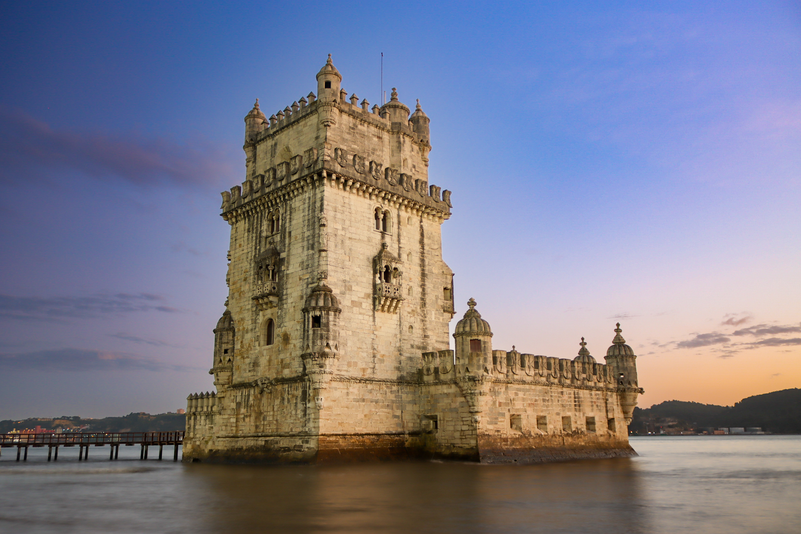
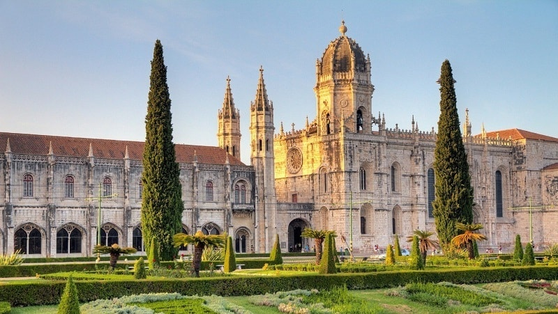
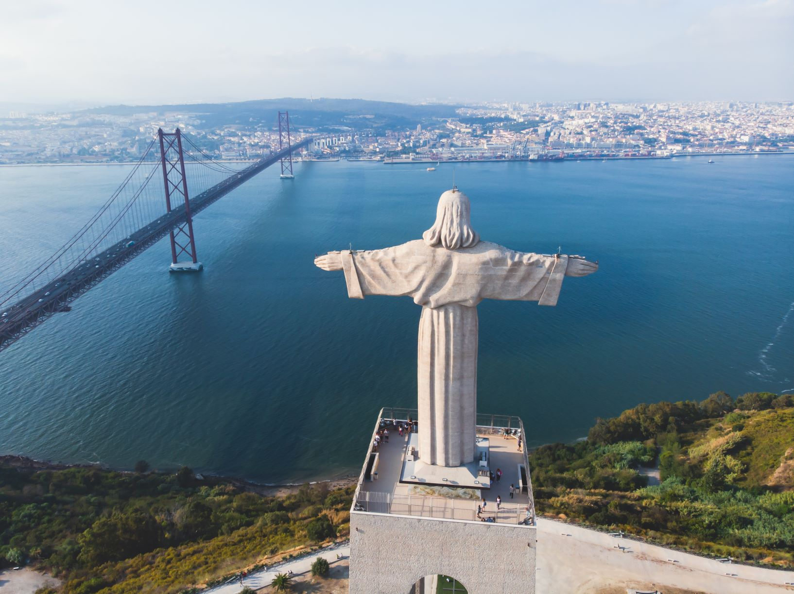

Historical Sights in Lisabon
Step back in time and explore Lisbon's magnificent hilltop castles, UNESCO monasteries, and historic waterfront monuments.

UNESCO LandmarkTorre de Belém
Iconic 16th-century fortified tower standing on the banks of the Tagus River, built to defend the city and serve as a ceremonial gateway to Lisbon.
- Av. Brasília, 1400-038 Lisboa
- €9 | Student discounts available

Top SightMosteiro dos Jerónimos
A breathtaking Manueline-style monastery housing the tomb of Vasco da Gama, famous for its grand cloisters and intricate stone craftsmanship.
- Praça do Império, 1400-206 Lisboa
- €12 (Free church entry) | Student discounts

Iconic ViewpointSantuário do Cristo Rei
Towering 110-meter monument inspired by Rio's Christ the Redeemer, standing on the southern bank of the Tagus River with incredible views of the 25 de Abril Bridge and Lisbon skyline.
- Alto do Pragal, Av. Cristo Rei, 2800-058 Almada
- Free grounds access | €8 for the top elevator deck
Erasmus Local Tip
Always carry your student ID card (or ISIC)! Almost every major historical monument in Lisbon offers a 50% discount for students under 26, and many offer free entry on the first Sunday of each month for residents.